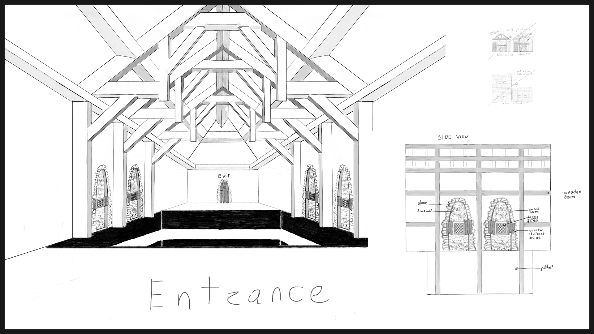
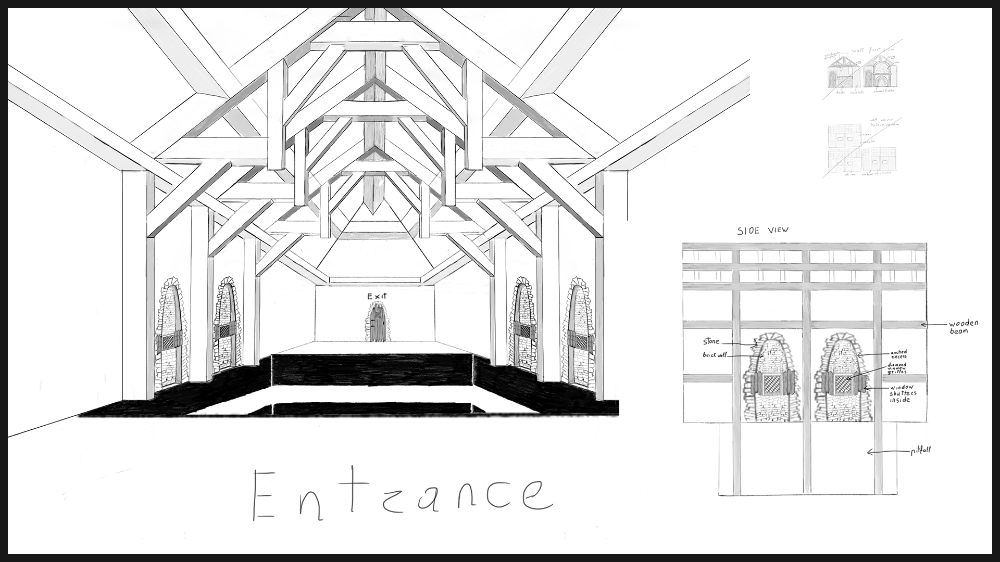
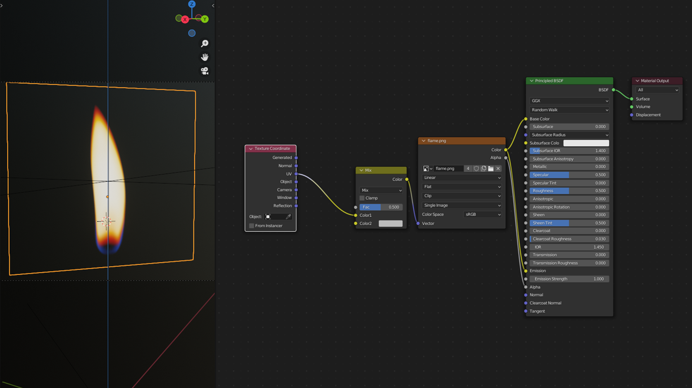
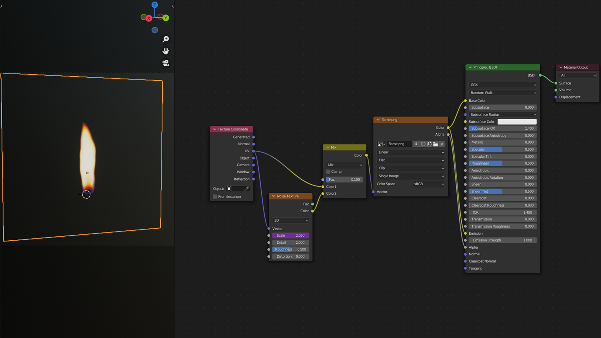

Creating 3D environment for the co-op VR gameplay "Split Senses"
3D Environment Artist
1.1 Idea
1.2 Theme
1.3 Research
1.4 References & Sketches
This is an interactive game in a 3D co-op platform utilising virtual reality (VR).
One player will use VR, but will not have any control over their movements.
A second player is provided with a gamepad that allows him to move the 'player', but he cannot view the path ahead.
The players have a common goal, which is to reach the door on the other side by navigating the path without falling.

We chose the middle ages for the theme because of its artistic style and also because it's recognisably.The medieval period has many references, and it integrates well with the gameplay experience.

My responsibilities for this project are to create a game environment. I researched this period style and what materials they used.
This research informed me that in the medieval time they had
various styles, from Romanesque, French style, and Gothic styles of architecture
In this time, they used dramatic stone and rich wood accents. The main spacious room was comprised of timber or stone walls, sometimes plastered. They had exposed wooden ceiling beams, pointed or round arches, small windows with wooden shutters, stone or wooden floors.
I'm thinking about exposed ceiling vaulted wooden beams. It will create the illusion of a large game room for the players.
In the later medieval time, they used brick. Thus, brick walls will add character to our environment, and it is an unbeatable combination with wood.
 

Creating our game environment, I collected these references, which are all connected to the middle ages.
Windows shutters inside, diamond window grilles, arched recess, wooden beams sources. I also added a medieval room reference with lights, brick walls and stone flooring textures.
Below is my sketch of how our game room will look. I drew hammer beams. In my research, I found it was designed in the medieval period.
This video shows step by step how I developed the environment model in Blender. It is screenshots and workbench engine rendering. Then I combined and made a video in a blender video editing.


Here is a workbench and clay renders. I used the workbench engine for modelling preview. It is very fast render.


My other colleague was responsible for the Environment assets. However, I wanted to have the assets in my library from the middle age period. Also, I wanted a nice final render with chandelier assets and candle flame textures, which I am planning to animate.


I have used textures from Adobe Stock. The brick texture for the wall, the stone texture for the floor, and dark wood texture for the beams. There was only diffuse texture. I did not want my textures to look flat. Thus, to make bumpy textures, I created a bump map, and to see more details of height, I created a displacement map in Photoshop.
To give dark shadows, I used an Ambient occlusion node for the wall & floor textures.

For the window and door arch, I used the same stone texture as for the floor. I scaled down the arch meshes 2D unwrapped parts in UV editor, so that the stone texture would be like one tile on every mesh.
For the window frame and shutters, I have used lighter wood texture, and I also created bump and displacement maps in Photoshop.
For the window diamond grille, door handle and decorations I have used metal texture. A diffuse for the metal colour, metal map to look metallic, roughness map to make the surface shiny, and to give bumps and crackings, I placed a bump map.
For the hinges, I decided to use image texture as a plane. As I know, all curved, rounded models use many geometries. Thus, in some cases it is a good choice, particularly for the low poly games as I was thinking for.
For this chandelier and wall sconce, I have used the old metal texture. This texture had 4 maps: diffuse, specular, normal and displacement texture maps which I plugged in the correct socket.
The flame texture I have used as a plane. I plugged image colour to base Principled BSDF colour socket and image alpha to Principled BSDF alpha socket. This alpha channel made the flame image background transparent. Lastly, I dragged the image texture colour vector to Principled BSDF emission. It allowed me to control the texture strength.

For this project, I used a sun light, the area lights, point lights, and created a ray light.
I used a big size, a rectangular shape of area light. This light is for the main environment light.
For lighting the whole chandelier models, I used square area lights.
Point lights, for candle chandeliers and sconces.
The ray light was created by using an emission node and plugged to a volume socket, and I also added area light.
Lastly, for the outside environment, I used a sun light with sky texture.

Firstly, I added a rectangular shaped area light on the ceiling for the whole room. I increased the size by x and y axis. The room roof is vaulted. Thus, to get light for the entire vaulted roof, I rotated a light 35 degrees.
On my first render, I saw my ceiling lamp model texture was not visible. Thus, I placed square shape area lights using a 3 point light method on each chandelier.

This light I used for my candle flame. I have three chandeliers, and every chandelier has 6 candles. Thus, I needed 18 point lights. To save my time and for easier control later on, I carried this process:
I added a plane mesh and a point light. Then I parented the light to the plane mesh. Next, I added empty. It will be my circular array offset of lights. Then I added an array modifier and increased counts ( 6, that amount of my chandelier candles).
Next step, I went to object properties and chose instancing, and then clicked on the faces. Thus now my point lights on every plane. Afterwards, I went to edit mode and moved away my plane mesh from the world cursor. Then I went back to array modifier and firstly ticked object offset, and then it allowed me to add my empty.
So now this empty controlling my plane mesh with point light. Then I rotated and applied the array modifier. I applied this modifier because I want to use the array option again. So in the last step, I added an array modifier and increased count.
This method is easy to control. All these lights are controlled from the original point light. The power, colour, radius etc. When I change the root source colour, it will also change all these point lights.
For this environment, I wanted to give light from the outside. Thus, I decided to use a daytime light with a ray coming through the window. So for the outside, I used sky texture and added a sun light. I enabled a sun position add-on, and set up time of the day, north offset and latitude. Then I created a ray by duplicating the window glass mesh. Next, I extruded it and grabbed it in position as needed, and rotated. Afterwards, I went to shaded mode, deleted the old texture, and added an emission node. I connected it to the volume socket, and I reduced the emission default value as needed.

I have made some modifications to some details in the environment. The path generation script is 12x12 square.
In my previous environment model, the path was rectangular, which I've structured into a square.
I’ve also added my colleagues assets that I've textured. So this is my last render with pitfall adjustments.
To distort flame texture, I used noise texture. Firstly, I added a mix node and plugged it to the image texture vector socket.
I needed to coordinate the image texture as UV. So I added a texture coordinate node, and I plugged into the mix node to socket colour1.

Afterwards, I added a noise texture and plugged in to the mix node socket a colour2. Then I got an inappropriate distortion. I fixed that by reducing the mix node factor value and reduced scale amount.
Lastly, I added a driver into the noise texture scale bar.
Finally, my flame animated.
However, I wanted my flame to flick. So to do this, I added a key on emission strength.

Then I went to the graph editor and added a Built-In Function modifier.
So now my flame turns off and turns on. It is because shrink going until zero. It is not what I want.
Thus, I added a value offset. My texture strength now looks like flickering. Then I increased amplitude, which added flickering strength. Lastly, I restricted frame range by adding in and out range frames. I did it, because I wanted the flicker to appear slowly and fade out slowly.
I used a Bezier and circle curve for the camera movements. Then I set a camera to follow this path by pressing Ctrl P. Afterwards, I added empty and then set the camera focus element to this empty by adding a constraint Track To. By moving this empty, I controlled the camera focus to my models.